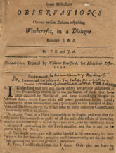

|  |
Some Miscellany O B S E R V A T I O N S On our present Debates respecting . Witchcrafts, in a Dialogue Between S. & B.By P. E. and J. A.Philadelphia, Printed by William Bradford, for Hezekiah Usher. 1692. This copy used with permission from the Massachusetts Historical Society © 2000, Rector and Visitors of the University of Virginia |
|
Sir, S. I understand that you and many others are greatly dissatisfied at the Proceedings among us, in the pursuance of those that have been Accused for Witchcraft, and have accordingly sought to obstruct them; which I am afraid will prove pernicious to the Land; and that for more reasons than one; principally in the hazzard of Breaches and Divisions among us, which tend to force unhappy Change ; and somebody will be to blame. B. Sir, the Peace of a Place is earnestly to be sought, and they that sinfully cause Divisions, will be guilty of all the miserable effects of them but whether this blame will truly fall upon you or us, is to he considered there is an earnest contending for the Truth requisite, and that is not to be parted with for Peace. S. No doubt every one will justifie himself in his own way ; but men are not for that Innocent : yea, the most blameworthy are for the molt ` part carried out with the greatest Confidence. A. True, I could reflect here ; but I spare. Only give me leave to (2) tell you. that we have more reasons to plead our integrity by, than possibly you know of or will easily believe. S. I should gladly, hear them. B. I confess, the Animosities on both lids have been sinful, and much obstructive to the coming at the Truth : but if you will promise placidly to argue the Cafe with me, you (hall hear what we have to say ; and I will as readily entertain anything from you : and if we can come to a better understanding between us, it will be well. S. The proposal is fair, and I shall endeavor to comply with it ; only give me leave first to Catechise you in a few things. B. I shall freely give you my sense of anything you will ask. S. Do you believe that there are any Witches? B. Yes, no doubt; the Scripture is clear for it; and it is an injurious reflection that some of yours have cast upon us, as if we called that Truth in question. Whether anything we attest doth undermine it, is to be considered. S. And ought not these Witches to be Punished ? B Without question: the Precept of Gods Word is for it: only they must be so proved. S. But may not Witches be to Detected, as to be liable to a right consious Sentence and Execution B. I believe it, though I think it not to easy as some make it, yet God often righteously leaves them to discover themselves. S. Ought not the Civil Magistrate to use utmost diligence in the Searching out Witchcraft, where he is directed by Gods Providence to grounds of a just suspicion of it B. Doubtless: yet ought he to manage the matter with great Prudence and Caution, an. attend right Rules in the Search. But now give me leave to take the like liberty of propounding two or three questions to you ?
B. Taking it for granted that there are Witches in NEW ENGLAND, which no rational man will dare to deny; I ask whether Innocent Persons may not be falsely accused of Witchcraft ? S. I verily believe it, and hope none of you suppose us so uncharitable as to think the contrary. B. Do you not think it an hard lot for an Innocent Person to have the aspersion of Witchcraft cast upon him ? S. Without scruple ; there being no Crime more scandalous and abominable; nor any that is with more difficulty wiped off. B. All of )-on are not so minded on my Knowledge: but ought there
(3) not to be good grounds of suspicion, before a person (especially of honest Conversation) be brought on to the Rage to be examined for such a Crime ? S. I fee no danger in owning the Affirmative ; I am not yet con` winced that there is any Reflexion in it upon us. B. That is not my business : but did you think that every suspicion is enough to commit a man to Prison for suck a Crime ? S. Why not, if the suspicion be built on just Presumptions ! for this is only- in order to a fair Trial, which is to pass through two juries, where ` he will have the liberty to Vindicate his Innocence openly. B. You must give me leave to diffent from you here, before I Proceed in my Queries. I am informed that in a Legal Warrant made for the Commitment of a Person, his Crime may not be mentioned under the Lenefying term of suspicion; but the Act or Acts are to be Expressly Charged ; E. G. you are to take into your Custody, &-c. for several Acts of Witchcraft Committed on the body of, &c. now certainly, there is more than a meer suspicion upon fallacious Presumptions, necessary for the doing of this Honestly. Our statute Laws therefore have provided great Cautions against the Committing of persons without Substantial rounds: Besides, it is certain, that on lighter suspicions of Capital Crimes, Bail may be taken; so that if the person be committed to Goal, his Mittimus goes for want of Bail, and doth not directly charge the Crime on him; yea and Bail may Rill be taken after Commitment. Moreover, Reason it self faith, that when a man is Committed without Bail, and may not come off without a Jury ; and in order to that an Indictnent must be formed against him, where the Acts are again to be Positively & Particularly charged upon him, and Witnesses to be Examined, which exposeth him to open Ignominy, there ought to be something Substantial against him. Yea Conscience will tell a justice, that if he verily believes that a Grand jury ought not, or cannot Legally find Billa vera against such a man, he doth him an ineparable wrong in so committing him ; since hereby, his Credit is Steined, his Liberty Restreined, his Time Lost, and great Charges and Damages come upon him ; which, who shall repair ? S. These things seem to have some weight in them, but I think them aliene from our Case: please then to Proceed. B I believe them not so aliene ; but for the present let me ask : Do you think that a less clear Evidence is sufficient for Conviction in the Case of Witchcraft, than is necessary in other Capital Cases, suppose Murder, c:; c. S. ' We suppose it necessary to take up with less, how else shall ' Witches be detected and punished according to Gods Command? ' Witchcraft is (4) then esteemed Capital, when the person is Guilty of `being in Combination with the Devil ; which muff be proved by Presumptions ; for who saw or heard them Covenanting? B. This is a dangerous Principle, and contrary to the mind of God, who hath appointed that there shall be good and clear proof against the Criminal: else he is not Providentially delivered into the hands of Justice, to be taken off from the earth. Nor hath God exempted this Case of Witchcraft from the General Rule. Besides, reason tells us, that the more horrid the Crime is, the more Cautious we ought to be in making any guilty of it. S. But how then shall Witches be detected and executed? Must the Land grown under the burden of them, and is there no relief ? B. Witches (as other Criminals) are not to be executed till detected ; nor are they detected, till indubitably proved to be so : for which we are to use Gods way, and wait his time : and his will in his providence is, that some mens sins shall go before hand to Judgment, and others shall come after. S. But Divines fi Lawyers put great weight on Presumptions as Perkirs, Bernard, Dalton, &c., and you seem to make them insignificant. B. So we are indeed charged, but injuriously. :1s for Dalton, he only prescribes Rules for Justices in their private Capacity, for the Examining, or at most the commitment of the Persons suspected; and his Rules are given so Confusedly, that I think no justice can understand his Duty by them. As for Perkins and Bernard, whom you instance in ; 1 presume that either you have not read them, or mistake them. They rightly distinguish between Presumption and Conviction ; and tell us that some Presumptions, are stronger than others; some only sufficient for Examination, others enough for Commitment: but they confidently aver, that all presumptions, which are no more but to, are short of being Concidion ; and where are you then? and indeed they say nothing but what hath good reason in it ; for to put a man to death by bare Presumptions, is to do it by guess, and that is something hard. S. You seem to be very nice and critical in this point.
S. But what then will you allow for a clear Conviction ? B. I will tell you my thoughts in several Particulars, :Against which if you please you may objet : and First, there mull be a matter of fact evidently done, and proved: for, where there is no fact there is no ground of accusation against any person.
(5)
S. What do you mean by evidence? B. I mean, that it be infallibly, or if you will, indubetably certain, that he who did that fact, rendered himself by it Guilty of the Crime, for the proof whereof it is alledged ; otherwise, the Crime is not found out by the fact. S. Why may not a strong Presumption do here, especially if there be many facts which look that way? B. Good reason ; for if the fact may be clone, and yet the person doing it be innocent of the Crime, the Verdict is meerly conjectural, and the man dyes by will and doom: whereas God hath not granted to men such a power over one anothers Lives. If the Hypothesis be not necessary, there can be no Evidence or Demonstration drawn from it : and if the artificial argument fail. the Testimony cannot affect the party. S. You may please to proceed. B. Thirdly ; a full and clear Legal discovery, that the party accused hath done the fact by which the Crime is evidenced. For it is one thing to be certain that there is Witchcraft in the thing, and another to know who is concerned in it : nor are we to fix it upon conjectures, be they never so probable. S. We shall agree in this Doctrine of a Legal discovery, and if we can do so in the Application, I hope there will be no further difference ` between us. Please then to interpret your mind in this matter. B. There are two things whereby this Conclusion may- be made evident ; and any one of them is sufficient : and they are both of them well known, and plentifully spoken to by Authors: it will there be needless now to insist on them. S. Let us a little Discourse on it, for possibly we are not of one mind `about them. B. The first is, A free and full Confession made by the Accused person, of the Fact, being in his right mind, and not frightened or forced into it. S. But may not a person falsely accuse himself. and so dy of a Crime `of NN which he is Innocent? B. He may : nevertheless, if all due means be used, his Blood is on his own Head, and the Civil Authority will be blameless. S. What mean you by a person in his right mind B. One that is neither distracted nor discontented ; and so may not be supposed either to confess he knows not what ; or to do it to rid himself of life, and to diffraction I account deep Mellancholy expressed by the
(6) prevalency of strange Imaginations, apt to lead him into a belief of anything against himself or others. In these cases much tenderness is to be used. S. But how shall this be known ? B. Enquiry is to be made of those that converse with them : and if there be nothing appear but that the;- are in their right mind, the Case is clear against them. S. But you talk of a free and voluntary Confession; so you condemn the Examining of them by Civil Authority, and strictly proving ` them by questions, which are proper to bring them to such a Confession. B. By no means, provided it be fairly done. S. When is that ? B. First when there are strong Presumptions against the Person; and that is the main use of Presumption, viz. to bring the person upon Examination ; and to do it without such, is a breach of the Rule of Charitv, which is to think no evil. S. And when else? B. Secondly, As I before said, when means are not used to force or fright their into it extorted Confessions are not fair. S. You talk of Spanish Inquisitions; 1 hope none of nuts are ' chargeable with it, and yet I know there are force who plead for ha' amination by Torture B. See you to that ; I am not accusing, but arguing; and let me tell you, there are other ways of undue force and fright, besides, Racks, 5trahpadoes and Each like things as Spanish Inquisitors use. S. What are they? B. I may tell you another time: but I now pass to the second ground of Conviction, which is The testimony of two sufficient Humane Witnesses, to one and the same Individual Fact, as done by the Party Accused. S. You are too streight Laced in expressing of this, and I am dissatisfied with it. B. I am willing to be convinced by Reason. S. I see no reason why it is necessary that there should be two Witnesses to the same Individual Fact: I thought it had been enough, if it were to the same Fact in Specie : I know judicious and Learned Men are of this mind, and tell us, that it is enough to gain Humane credit; if one man say that he saw Lions in Africa last year, and another comes & says that he saw Lions there this year; though it was not at the same time, nor likely the same Individual Lions: why then may it not do in this Case? (7) B. The case is vastly different. I may give an Historical Credit to Reports, upon probable grounds, because, if they should prove false, no man is hurt by it, and therefore, one good credible author may suffice here. But to take away the Names and Lives of Persons on so easy a belief, is not so light a matter. The mistake doth a mischief irreparable. besides, the moral reason of appointing two Witnesses at least to confirm a matter by, is properly referrible to Individual Facts: for, it is by such that a man is proved guilty : now my denial challengeth as much credit a, anothers affirmation against me : and every particular Fact, having my particular denial against him that chargeth me: there is but one to one in that Individual: and the Law of Equity and Charity requires that I be believed in my own Defence, where there is nothing to preponderate. S. I If this Rule be always followed, it will be hard to punish Wickedness. B. f it be not carefully followed, there will be no Security for Innocence. S. I am not clear what you mean by Humane Witnesses : I have understood that you deny the Afflicted Persons to be such. . B. That is one of your mistakes ; and you labour of a great many to your judging of us: acknowledge the Afflicted Persons to be Humane; and if they are Witnesses at all, they must be Humane Witnesses ; but I trust you will see your Error anon. S. But what then do you mean by the Testimony of Humane Witnesses? B. I mean, that the Testimony it self be Humane, as well as the Witnesses; or, to speak more plain, that the 'Thing Testified be that which he came to the knowledge of, after the manner of men. S. I What do you mean by that ? B. I intend, That which one man can know concerning another by his Senses, and that according to the true nature, and use of them; whatsoever comes in any other way, is either by extraordinary Revelation from God, or by the insinuation of the Devil ; and what Credit is legally to be given to a thin, which an Humane Person swears, meerly upon the Devils Information ? S. It seems then you would altogether invalidate the Testimony of our Afflicted? B. I have many things against it, which I shall reduce to two Heads. First, I cannot think them to be competent Witnesses. S It may be you run away with the common vogue, that they are scandalous persons, liars, and loose in their Conversation, and therefore not to (8) be believed: but you are mistaken : and if they- were, yet they ï may b\ this affliction be made better ; but however - they are not upon a Record for any of these things, and are therefore Without any legal exception. B. I have heard many things of that nature, and I do believe, if they be true, and made so to appear, it ought to weaken their Testimonv, although they do not stand upon Record; so that if such thins be proved before a Jury (who are judges of Witnesses, and of the weight of their Evidence) they are in Conscience to count them insufficient, and I am sure that utmost care ought to be had about the qualifications of such whose Testimony is taken against mens lives; that they be according to the Rules, which Moral Heathen, by the light of nature have acknowledged to be necessary. But here is not my great stick.
B. True; and yet there may be that which Will render them incompetent. As, suppose them to be possessed persons. I know you stiffly deny it, because you fore-see that if you grant it, their Witness is thereby rendered invalid. S. Yea, and we have sufficient reason to deny it. B. Be not over confident, you may be mistaken. What are your reasons? S. They are bewitched, and therefore not possessed; there are seven signs of one bewitched, and fix of these agree in them. B. I dispute not that ; though I find force to be very confused in this point : but supposing them bewitched, they may be possessed too: and it is an ordinary thing for a possession to be introduced by a bewitching, as there are many instances in History do confirm. S. But they have their fits by times and are out of them again. B. :end yet they may be poffeffed. Such as were posselfed by Devils, ()n the records of the Gospel Hillory, were so. f. ' But there is no S\-mptom on them, which may not well agree to ' one that is bewitched, and not pofesscd. T~. I l)elieve you are mistaken. I could name mangy- things, which I think mull prove them Witches or pofetted : and I charitable b~lie~ e the latter of them. .S. ` I could never be convinced of that. B. It may be so : and I could give a reason for it. But what do you think of their extraordinary fight, which you make so much ufe of to the astonishment of sotne of us ? and what of their telling of thins clone at a dittance, their Predicting of things future'. and (if you may be Credited) their discovering of things Secret, and done before they- were born, (9) and telling the names of perfors whom they never heard of; and many things of like nature. S. ` I believe these may be the effects of Witchcraft. B. Not of meer Witchcraft ; nor yet are infallible evidence of Witch craft : they may be without it, immediately- from the Devil ; and cannot be without either force possession, or fotne unlawful commerce with the Devil. S. ` You NN-111 hardly perfwade ours to believe you oil this point. B. It maybe so : but I have further to object againll their being suffcient Witnelfes. hip. Their incapacity to give a full and clear Testimonv, to the face of the Prisoner. at the Parr ; and yet that is requisite by Law and Reason. ` That is becaufe the Witches finite them down with their.poifoned ` Looks. h'. That is more than you can prove : but suppose it; they are herehy Providentially prevented of doing that which is requisite in a Legal Witness. S. ` It is indeed an Obstru(iion for a time : but with much Patience there is at length a Teltimony gained of them. B. A poor one too : for you lay that the Devil somtimes takes away their memory-, and it inustr be refreshed, by putting things to them, and that is enough : somtimes also there mull be a great many parcels in the Evidence, and that mull make it confufed. ~. ltut somtiines the-- are as well as you are, and are they not coil) ' petent Witnefes now ? R. I doubt that ; for Mules they have their speclral fight, I cannot suppose them to be clear from the Charm. But this is not the thing 1 mainly info upon ; But the fecond thin, I would plead to is, their Testimony is not Conviclive. S. ' Ho\\ Co ? 13. For two reasons, becaufe it is not Humane ; nor cloth it affect the person. `. ` Why not Humane ? they are Humane persons I suppose that ` give it. li. True ; but how came they by their Knowledge? it is not according to the way that is natural for then to know things by ; but it is either Supernaturally, or Preter-naturally ; and that mull be Extraordinarily, either from God or Satan. .S. ` Many of us think it to be froth God for the discovery of Witch c raft. (10) B. .end one of yours tells me, he is confirmed in it, becaufe the confessing Witches say so. But no more of that. I am sure, by your own concessions, the moll of their information is from the Afflicting Spec`Ires, and the Black man, (it may be somtimes lie puts on white, to look like an Angel of Light) I believe when God raifeth tip Prophets, he will reveale himself in sorne other way to them, than by Devils; and in some other sort of raptures than in Tormenting Fits. S. ` But if it be of the Devil, it may be over-ruled by God to difcover ` wicked persons, and bring them to deferved punishment. B. I believe Devils are under the Government of Gods Providence, & may be by his ruling hand improved in such difcoveries: but it is without their designing either the Glory of God or the good of men, but the contrary ; and therefore whatever comes from them i; to be suspecled ; and it is dangerous Winn or crediting them too far. .S. ` But what if God will Extraordinarily ufe Devils in this affair' ` shall we reject his Providence in it? B. This is a thing which I am not ready to believe in this Cafe ; and that becaufe it is an insufficient Medium to attain the end, and that for the Second reason I named, l es. it doth not affeEl the person accufed. S. ` You said so indeed ; but it needs proof. B, When I say it affe6ls him not; I principally intend, it will not amount to an evidence against him; and if so, what difcovery is there in it ? S. ` Do you not believe that his Spedlre is feen afflicting by the per' son afflicted ? B. Supposing it ; yet it doth not hence follow that he is the Witch. S, ` We muff grant that it is the Devil in the Spectre ; but it is by ` the Parties confent, and therefore it proves him Guilty. B. I know you all plead so ; and tell us that the Devil cannot reprefent an Innocent person doing mifchief, but never proved it ; nor can we believe you. S, `Where then is the Rec-loral Holiness of God in Governing the `World ? B. Where was it when God suffered A'c4hoths Life to be taken away, by falfe Witnesses? where was it when Solomon made that remarke in, F<iltl g, 14 ? It is not for such silly :Mortals as you and I to prefcribe to him who fits King for ever. S. ` But how could the V Vorld stand if it might be so permitted ? B. There are some things now and then Evene ; that if it were com-- (11) ~t rI mon, would subvert the World : and if Devils had their unrestrained Liberty, they would soon difcover it : and yet for God when he pleaseth to suffer such things, to Evene in a way of judgment, is confident with his Holiness, and is also Do(lrinal to us. S. ` But by this notion good mens lives might be exposed and lost. h'. Tlj,it is your fault who give suck :r credit to these thins. I believe, if it were your lot to be thus accufed, you would think it hard so to be so censured, or dealt by : you would either repent of your rashness, or turn Atheist. S. `I never fear it; God will never permit such a thing. B. That makes you to censorious : and others have so said, but now they are accufed, and eat their words. S. ` Can you give an instance of any Godly Person so accufed ? B. Iiistory supplies us with enough, and thofe not only Innocent, which were sufficient, but famous for extraordinary Piety. S. ` Who knows but they were Hypocrites and Witches for all ? B. True, and so are you for ought I certainly know : but the Rule of Charity- bids us to think well of them, till that appear which ought to remove this Charity. S. ` We think so too, but suppose here is enough, presuming it necef` sart' that there muff be the content of the party. B. :end it is a presumption in you, and insufficient, till you can prove that the Devil cannot do it without their confent, which I believe you never will. S. ` We do not yet fee that you have proved that he ever hath so `clone. B. That's a wheedle : none knows anothers heart: let us produce the most eminent instances of that kind, and you reply, who knows but they were Hypocrites and Witches? But meanwhile you forget that it lies upon you to prove, that it cannot be ; elfe how can you fafely conclude the Evidence you would draw from it ? it is a principle you pra(Slife upon, and sure you should make it good : Betides, we have arguments to make it Rationally appear, that it may well be. S. ` We are willing to hearken to Reason. B. That's well : Do you really believe that all the persons accufed are Witches'' God forbid that I (hould be so uncharitable. B. This is a plain contradiction : for if you believe the former conclusion, you muff either susped the Accufers of Falshood, which you will not bear, or of a delution, which you deny, or that all so Accufed are Guilty. (12) S. `We are indeed astonished at the thing; especially since the `number of the accufed is so formidably encreafed. B. Nor is there a prospec-I of an end of thofe accusations in this way. But will you admit of a little reasoning in this cafe? I suppose you believe that the Devil can do this, and will too, should God permit him fo tar. S. ` N o doubt. B. That God may permit him, conlistent with his Rectoral Holiness, is (I think) undeniable. He can make a scourge of it to punish a Backlliding People by : he can humble his own Children by it, and make it turn to their good in the end ; he hath clone things as unaccountable as this ; and who hath limited him in this only cafe. S. ` But if the Afflicted Persons Testifie that they fee such an one ' afflicting them personally, mutt not this be Convic-live? shall he excufe ' himself by saying the Devil did it in his likeness, without his confent ? ` may not men make this excufe in all other Crimes that are witnessed `against them? and where is the courfe of Justice then? B. I have heard much such insignificant talk : Supposing the AffliC`led capable of giving a Testiirtony, we Hill say ; that if two Witnesses aver such a thin,, concerning a person, and he cannot prove himself to be in another place at the same time, he is legally convici=ed, and (if innocent yet) he mutt adore God's Sovereign Providence, and acquit the judges and Juries : But what do you say, when they do it whilst the ACCnfed is in prefence, and many Witnesses tnust say it is not he ? for he cannot be in two places at once. .C. `That is the Witchcraft in the cafe, w-hich i5 hereby discovered ` for it is the Devil who doth all the mischief, only it is by their confent, ` otherwife they could not be supofed to be Witches. B. But when it is so, it Rill remains to prove their confent, which they- deny ; and your argument is not valid to evince it ; it being a conclusion which you draw at leaf( from uncertain premifes, how then should it be certain ? where the Word of God requires that the thing be certain. S. ` Witches then must not be known but by their personal Confef` Lion : and this is to prevent the finding out of such abominations. B. Otherwife Innocent Persons may be condemned for Witches: and what a fearful thing is that ? and know it, that God never intended to bring to light all hidden works or workers of Darkness in this World ; nor will it be imputed as a Sin, that men did not punish fecret sins without clear discoveries : but if in a precipitant zeal, they should cut off any for ('rimes not proved, it will be imputed. Nevertheless, there are other 1 31 (13) ways to find out Witches besides their own Confession. S. ` But I hope you will allow this, with force other weighty Circum!! ir,ce, to make up an Evidence against the Accufed. l~. I think not : and my reason is, becaufe there must be at least one F i, t proved against the person, for which he ought to dy : and that is it ~~ hich his Guilt is to be found upon ; and it is enough : but if there be no one such thing, all the Suspicious Circumstances will not make it up, becaufe the thing is not made certain by them. Besides, wife men tell us, that never so many meer Presumptions will not do it.
13. No, not in cafe of Witchcraft, when only the Afflicted accufe, and 13v-handers can neither fee nor feel anything : for that sight is Spectral, and that is preternatural, and so not convic-tive ; becaufe, as I before told )-on, witness to matter of Fact, must be of things that come under our Senfes, as they are Humane : this therefore proves nothing distinctly, or individually, but only disjunctively, viz. that it is either by Witchcraft, or more immediately from the Du% il. S. `I hope you will allow this to be enough to commit persons to ` Prison upon suspicion ; which may be an introduction to bring in other ` things agalnst: them. B. The Law provides that persons committed for Capital Crimes, be without Bayl ; and they muff at least; pass a Grand-jury ere they can have a delivery : and for that Reason, it also provides that no person shall be so Committed but for somthing which hath at least the value of one clear Testimony to prove it such a Crime : Besides, the name, and Life of the person is hereby expofed ; and reason tells us, there muff be somthing Testisiable against him for such a thin- : this is no light matter to have mens names for ever Stigmatized, their Families ruined, and their Lives hazarded. S. ` But by this means have many been discovered, and other things ` brought in against them, which have detected them and they have suf`fered justly. B. I have nothing to say on that account ; I never saw their Trials. But I know, an error in the First Concoction is not Rectified in the Second. Evil is not to be done that good may come of it. You cannot tell how many Innocent persons may be by' it ruined for this World. However, good events do not justify unwarrantable a6lions. .S. `Sure you will grant it to be enoujh to bring persons upon Ex` amination. (14) B. Do the Afflicted persons know personally all whom they cry, out of? S. `No ; sorrne they never saw, it may be never heard of before. I3. And upon whofe information will you fend for the accufed ? S. `That of the Afflicted. II. And who informed them ? S. `The Spectre. B. Very good, and that's the Devil, turned informer: how are good men like to fare, against whom he hath a Particular malice. .S. ` For the molt part they are known by them, at the least one or ` other of them. B. It is but a Presumption ; and wife men will weigh Presumptions againil Presumptions. There is to be no Examination Without grounds of tiispicion. Some persons Credit ought to be accounted too good to be undermined so far as to be suspected on so flight a ground ; and it is an injury done them to bring them upon Examination, which renders them openly suspected. I will not deny but for persons already suspected, and ,of ill same, it may occasion their being Examined ; but if nothing elfe comes in, nor a Confession be made ; the Life of such a Presumption any further ceafeth : but if other things of moment appear, a further Legal proceeding may be made. S. ` That is enough for me ; we never imprisoned any on a meer `Spectral Evidence, or the bare accusation of the Afflicted. B. Nor Examined any Publickly, who were before of good reputation for Piety ? Some think other wife; but what is that to me? I would fain know what the other thing is .S. `When they have been brought before the Afflicted, they have ` (buck them down with their Eyes, and raifed them again with a touch ` of their hands. B. You are very uncharitable to say they did it, becaufe there have been such thins in concomitancy. S. ` The very poison of the Witches eyes hath knock't them down. B. I fee you are no Philosopher : I am satisfied that there is Illusion in this as well as the other ; I pray do these effects follow meerly on their coming in their tight, or by using of it as an Ordeal ? S. ` It was first discovered occasionally, but fence hath been ufed for ' an experiment, and is found never to fail. B. The Life of this as a Trial, is utterly unlawful, as will ere long be made to appear to the World : and besides, the thing is not evidential, when it is clone; but exceedingly fallacious : yea indeed, it is not any ~~hit more a Pretumption thin the former, if so much. (15) S. ` But it never fails, B. The more awful the judgment of God, and the greater the Trial of our sincerity, if, though the thing comes to pass, yet we will not be drawn from our obedience to God. S. ` We have old presidents for the using of such a courfe. B. No president will justify that %%hich is sinful, the older an error the worfe : besides, it was borrowed from Popifli Fxorcists originally. S. ` Some tell us that there is a natural caufe for it. B. And you believe them 1 The effect is preternatural, and the thinunaccountable: and mens wild guesses in such an affair, ought not to pass for Maxims, where life is concerned. I know not how you stand affedled ; but I profess I should be loth to dy upon a meer point of Philofophy that is at molt disputable. S. `You are an admirable Advocate for the Witches. B. This is not the firf; time. But if you thus Reflect, we had as good break off at prefent. S. ` I would willingly before we part afk you what you think of the ` accusation of the Confessors, who say they- have feen such in their :~Ieet`ings, and diverfe Baptized by the Devil. I have heard that you make ` light of this too ; whereas we thought it would have put all out of ` question. B. I have already told you my judgment of the Confessors against themfelves : but there is enough (I think) to invalidate their evidence against others. S. ` The Law provides that Accomplices eonfesstng are valid against ` their Associates. B. There are disputes about that, and I am not so good a Lawyer as to determine it: only I have to except in this Cafe. S. ` I would gladly hear what you can say to it. B. First, the persons confessing are Witches by their own confession and have therefore abjured God and ChriR, and given thernfelves up to the Devil, the Father of Lies ; and what Credit is to be given to the Testimony of such against the Lives of others ,S, ` But what if they have openly renounced that Covenant, and tef` tisied repentance, why are they not now valid ? B. Less Crimes require a long probation of persons repentance : and their bare say so, is but a poor evidence for them ; nay though they flied tears and afk forgiveness. Furthermore, some things ought to be a perpetual infamy to persons, and forever disable them for giving Testimony in this World ; to be sure, till they are rellored plentifully in the Charity of all good men. (16) S. `This seems harsh Doctrine. B. But I think it good Doctrine. Yet, Secondlv, The things themfelves which they Testifre are liable to many Illusions. The Witches themfelves do not know when they go in Spectre, and when in Body, and how should they then tell, whether the other be the person bodily or onlvï in Spectre? instances enough may be produced of such as confidently averred they were carried away in Body, when many Witnesses knew the contrary. S. ` I fee the difference between us and you is vey wide; and I fear ` the confequence. B. God is able to clear up these things, and let us herein agree to feek him for it, in the ways of his Appointment. |